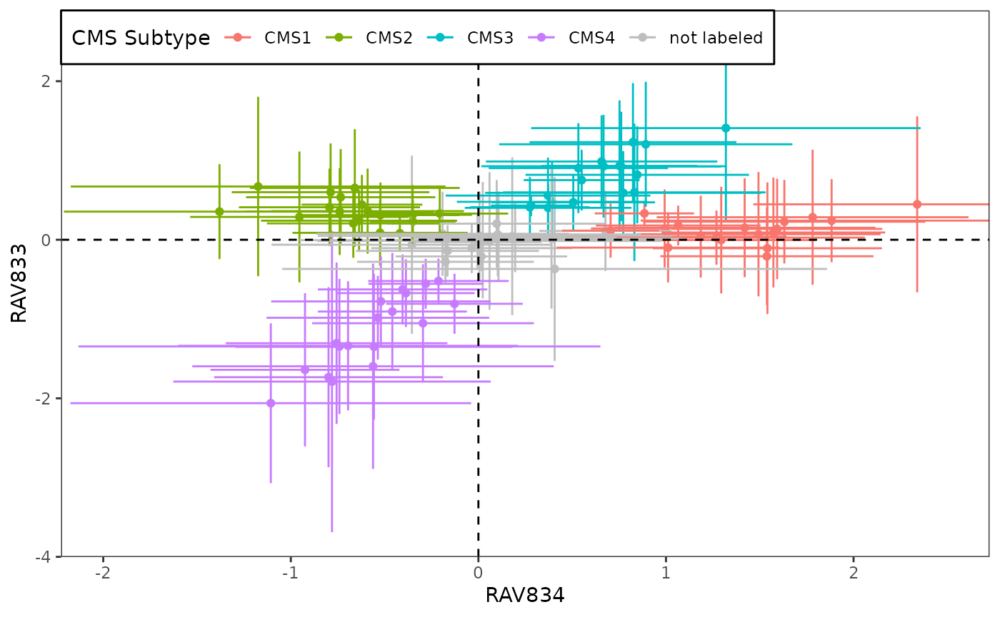
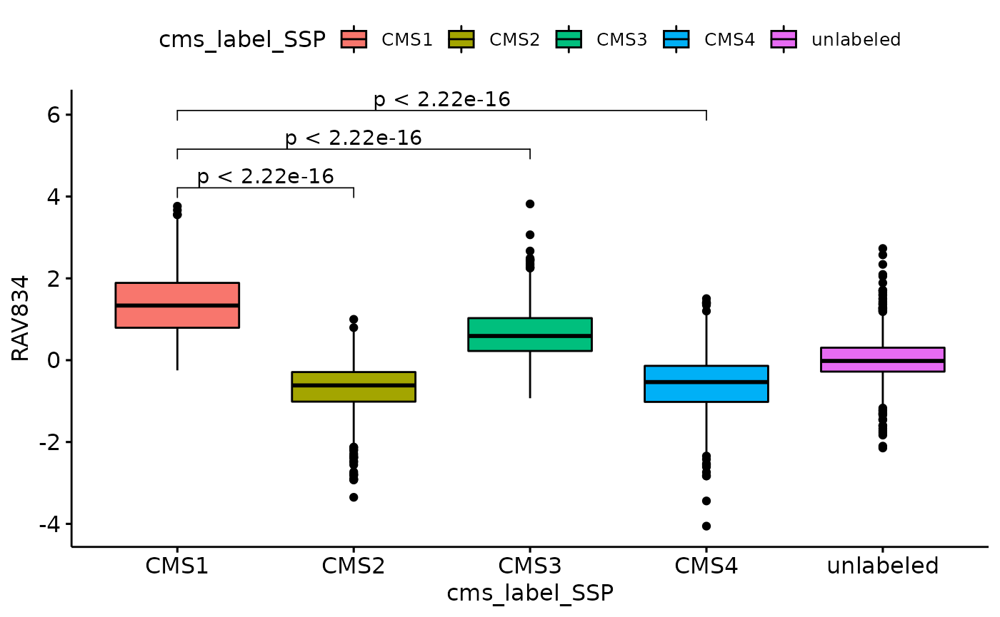
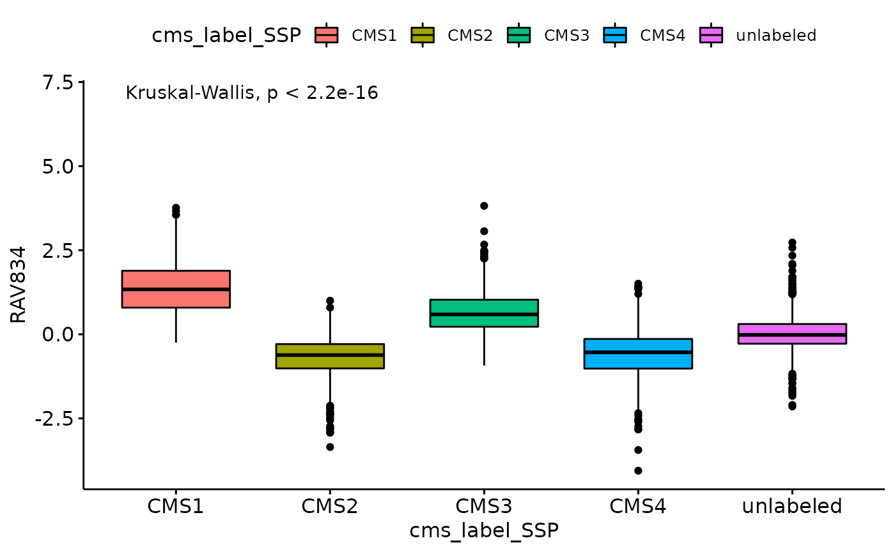

vignettes/CRC/metadata_based_search.Rmd
metadata_based_search.RmdAbstract
Source Code
if (!"GenomicSuperSignaturePaper" %in% installed.packages())
devtools::install_github("shbrief/GenomicSuperSignaturePaper")
## Load packages
suppressPackageStartupMessages({
library(GenomicSuperSignature)
library(GenomicSuperSignaturePaper)
library(ggplot2)
library(ggpubr)
library(dplyr)
library(Biobase)
})
RAVmodel <- getModel("C2", load=TRUE)
RAVmodel
## class: PCAGenomicSignatures
## dim: 13934 4764
## metadata(8): cluster size ... version geneSets
## assays(1): RAVindex
## rownames(13934): CASKIN1 DDX3Y ... CTC-457E21.9 AC007966.1
## rowData names(0):
## colnames(4764): RAV1 RAV2 ... RAV4763 RAV4764
## colData names(4): RAV studies silhouetteWidth gsea
## trainingData(2): PCAsummary MeSH
## trainingData names(536): DRP000987 SRP059172 ... SRP164913 SRP188526
version(RAVmodel)
## [1] "1.1.1"
load("data/eSets/setNames.RData")eSets_new data is available upon request.
Combine all the phenotype data from CRC validation datasets.
## phenotype tables combined
pdata_df <- setNames %>% lapply(function(set) {
eSet <- get(set)
pdata <- pData(eSet)
eSet_tmp <- eSet[, pdata$sample_type %in% "tumor"]
pdata_tmp <- pData(eSet_tmp)
ind_rm <- grep("CRIS_", colnames(pdata_tmp))
if (length(ind_rm) != 0) {pdata_tmp <- pdata_tmp[,-ind_rm]}
pdata_tmp$study <- set # add 'study' column
return(pdata_tmp)
}) %>% Reduce('rbind', .)Combine all the expression profiles from CRC validation datasets and subset it with the common genes among them.
## common genes between all validation datasets
all_genes <- list()
for (set in setNames) {
eSet <- get(set)
exprs <- exprs(eSet) %>% rmNaInf
all_genes[[set]] <- rownames(exprs)
}
cg <- Reduce(intersect, all_genes)
## expression matrix combined
exprs_df <- setNames %>% lapply(function(set) {
eSet <- get(set)
pdata <- pData(eSet)
eSet_tmp <- eSet[cg, pdata$sample_type %in% "tumor"]
exprs_tmp <- exprs(eSet_tmp) %>% rmNaInf
exprs_tmp <- apply(exprs_tmp, 1, function(x) x - mean(x)) %>% t
return(exprs_tmp)
}) %>% Reduce('cbind', .) # 8219 genes x 3567 samplesCalculate sample scores and combine them with the phenotype data.
sampleScore <- calculateScore(exprs_df, RAVmodel)
data_all <- cbind(sampleScore, pdata_df)In this section, we identified the desired RAVs using metadata. As an example of discrete, multivariate metadata, we used four CMS subtypes.
f.stat.all <- sapply(seq_len(ncol(RAVmodel)), function(x) {
res.aov <- aov(data_all[,x] ~ data_all$cms_label_SSP)
f.stat <- summary(res.aov)[[1]][1,4] # extract F-statistics from ANOVA
return(f.stat)
})
names(f.stat.all) <- paste0("RAV", seq_len(ncol(RAVmodel)))
head(f.stat.all[order(f.stat.all, decreasing = TRUE)])
## RAV834 RAV833 RAV861 RAV188 RAV2432 RAV579
## 1216.5445 834.3780 742.6224 709.8732 656.5008 642.1502Based on the Q-Q plot below, the normality assumption is not met.
Try Kruskal-Wallis Rank Sum Test
# Kruskal-Wallis Rank Sum Test : a non-parametric alternative to one-way ANOVA,
# when normality assumption is not met
kw.chi.sqr <- sapply(seq_len(ncol(RAVmodel)), function(x) {
kw.test <- kruskal.test(data_all[,x] ~ data_all$cms_label_SSP)
kw.stat <- kw.test$statistic
return(kw.stat)
})
names(kw.chi.sqr) <- paste0("RAV", seq_len(ncol(RAVmodel)))
head(kw.chi.sqr[order(kw.chi.sqr, decreasing = TRUE)])
## RAV834 RAV833 RAV188 RAV579 RAV657 RAV1957
## 2146.136 1831.683 1829.326 1775.702 1750.150 1693.344We ran t.test between the four clinical variables and all sample scores. The test results were ordered based on p-value and the top 6 of them are printed. Both MSI and tumor location are explained best with RAV834 while tumor grade and stage seem to be more closely associated with RAV596 and RAV3290, respectively.
Microsatellite instability
## RAV834 RAV2013 RAV3599 RAV420 RAV2012 RAV517
## 3.587747e-99 6.819382e-83 2.164587e-75 9.580321e-61 4.124044e-57 6.586642e-56Tumor location
## RAV834 RAV4350 RAV2096 RAV2746 RAV2012 RAV2116
## 5.224891e-18 4.082548e-14 5.568131e-14 1.420074e-13 1.894671e-13 3.407322e-13Top two RAVs, RAV834 and RAV833, are identified from both ANOVA and Kruskal-Wallis Rank Sum Test. Below plot shows how these two RAVs are differentiating 18 CRC datasets. More related analyses are done in here.
sampleScore1 <- 834
sampleScore2 <- 833
df.results <- data_all
source("R/Fig4A_plotting.R", print.eval = TRUE)
We further quantified how RAV834 separates four CMS subtypes using different mean comparing methods.
my_comparisons <- list(c("CMS1", "CMS2"),c("CMS1", "CMS3"),c("CMS1", "CMS4"))
ggboxplot(data_all, x = "cms_label_SSP", y = "RAV834", fill = "cms_label_SSP") +
stat_compare_means(comparisons = my_comparisons,
method = "t.test", aes(label = ..p.adj..))
ggboxplot(data_all, x = "cms_label_SSP", y = "RAV834", fill = "cms_label_SSP") +
stat_compare_means(method = "anova", label.y = 7) # Add global p-value
ggboxplot(data_all, x = "cms_label_SSP", y = "RAV834", fill = "cms_label_SSP") +
stat_compare_means(method = 'kruskal.test', label.y = 7) # Add global p-value
sessionInfo()
## R version 4.1.2 (2021-11-01)
## Platform: x86_64-pc-linux-gnu (64-bit)
## Running under: Ubuntu 20.04.3 LTS
##
## Matrix products: default
## BLAS/LAPACK: /usr/lib/x86_64-linux-gnu/openblas-pthread/libopenblasp-r0.3.8.so
##
## locale:
## [1] LC_CTYPE=en_US.UTF-8 LC_NUMERIC=C
## [3] LC_TIME=en_US.UTF-8 LC_COLLATE=en_US.UTF-8
## [5] LC_MONETARY=en_US.UTF-8 LC_MESSAGES=en_US.UTF-8
## [7] LC_PAPER=en_US.UTF-8 LC_NAME=C
## [9] LC_ADDRESS=C LC_TELEPHONE=C
## [11] LC_MEASUREMENT=en_US.UTF-8 LC_IDENTIFICATION=C
##
## attached base packages:
## [1] stats4 stats graphics grDevices utils datasets methods
## [8] base
##
## other attached packages:
## [1] dplyr_1.0.8 ggpubr_0.4.0
## [3] ggplot2_3.3.5 GenomicSuperSignaturePaper_1.0.1
## [5] GenomicSuperSignature_1.3.4 SummarizedExperiment_1.24.0
## [7] Biobase_2.54.0 GenomicRanges_1.46.1
## [9] GenomeInfoDb_1.30.1 IRanges_2.28.0
## [11] S4Vectors_0.32.3 BiocGenerics_0.40.0
## [13] MatrixGenerics_1.6.0 matrixStats_0.61.0
## [15] BiocStyle_2.22.0
##
## loaded via a namespace (and not attached):
## [1] bitops_1.0-7 fs_1.5.2 bit64_4.0.5
## [4] filelock_1.0.2 httr_1.4.2 doParallel_1.0.17
## [7] RColorBrewer_1.1-2 rprojroot_2.0.2 tools_4.1.2
## [10] backports_1.4.1 bslib_0.3.1 utf8_1.2.2
## [13] R6_2.5.1 DBI_1.1.2 colorspace_2.0-3
## [16] GetoptLong_1.0.5 withr_2.5.0 tidyselect_1.1.2
## [19] curl_4.3.2 bit_4.0.4 compiler_4.1.2
## [22] textshaping_0.3.6 cli_3.2.0 desc_1.4.1
## [25] DelayedArray_0.20.0 labeling_0.4.2 bookdown_0.24
## [28] sass_0.4.0 scales_1.1.1 rappdirs_0.3.3
## [31] pkgdown_2.0.2 systemfonts_1.0.4 stringr_1.4.0
## [34] digest_0.6.29 rmarkdown_2.13 XVector_0.34.0
## [37] pkgconfig_2.0.3 htmltools_0.5.2 highr_0.9
## [40] dbplyr_2.1.1 fastmap_1.1.0 rlang_1.0.2
## [43] GlobalOptions_0.1.2 RSQLite_2.2.10 farver_2.1.0
## [46] shape_1.4.6 jquerylib_0.1.4 generics_0.1.2
## [49] jsonlite_1.8.0 car_3.0-12 RCurl_1.98-1.6
## [52] magrittr_2.0.2 GenomeInfoDbData_1.2.7 Matrix_1.4-0
## [55] Rcpp_1.0.8.2 munsell_0.5.0 fansi_1.0.2
## [58] abind_1.4-5 lifecycle_1.0.1 stringi_1.7.6
## [61] yaml_2.3.5 carData_3.0-5 zlibbioc_1.40.0
## [64] BiocFileCache_2.2.1 blob_1.2.2 grid_4.1.2
## [67] parallel_4.1.2 crayon_1.5.0 lattice_0.20-45
## [70] circlize_0.4.14 knitr_1.37 ComplexHeatmap_2.10.0
## [73] pillar_1.7.0 rjson_0.2.21 ggsignif_0.6.3
## [76] codetools_0.2-18 glue_1.6.2 evaluate_0.15
## [79] BiocManager_1.30.16 png_0.1-7 vctrs_0.3.8
## [82] foreach_1.5.2 gtable_0.3.0 purrr_0.3.4
## [85] tidyr_1.2.0 clue_0.3-60 assertthat_0.2.1
## [88] cachem_1.0.6 xfun_0.30 broom_0.7.12
## [91] rstatix_0.7.0 ragg_1.2.2 tibble_3.1.6
## [94] iterators_1.0.14 memoise_2.0.1 cluster_2.1.2
## [97] ellipsis_0.3.2